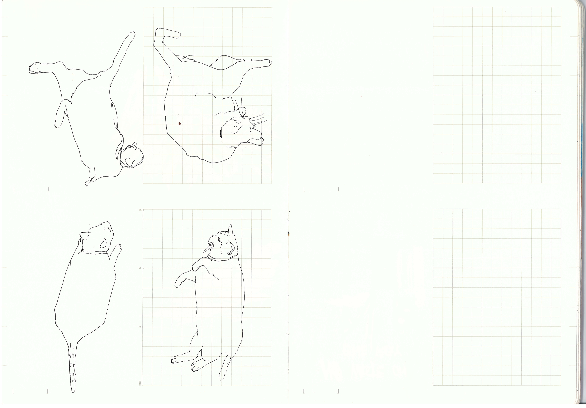
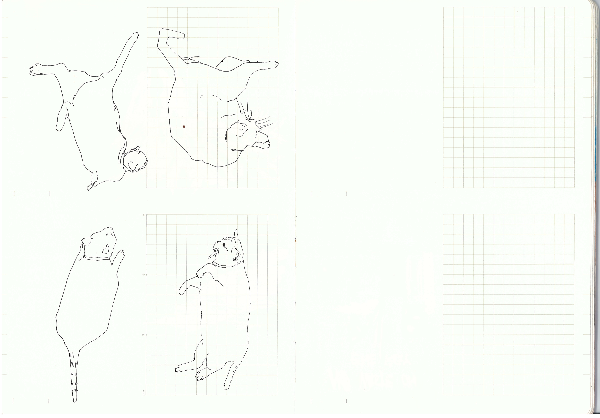

Furry Beings
Observing furry beings, drawn with care.



Observing furry beings, drawn with care.

I draw furry companions to observre small behaviors and quiet a gesture that often go unnoticed. They show honest movement and simple intention that i want to record by hand. It takes time to record the kind of intentions animals offer takes time, but that time is never wasted.